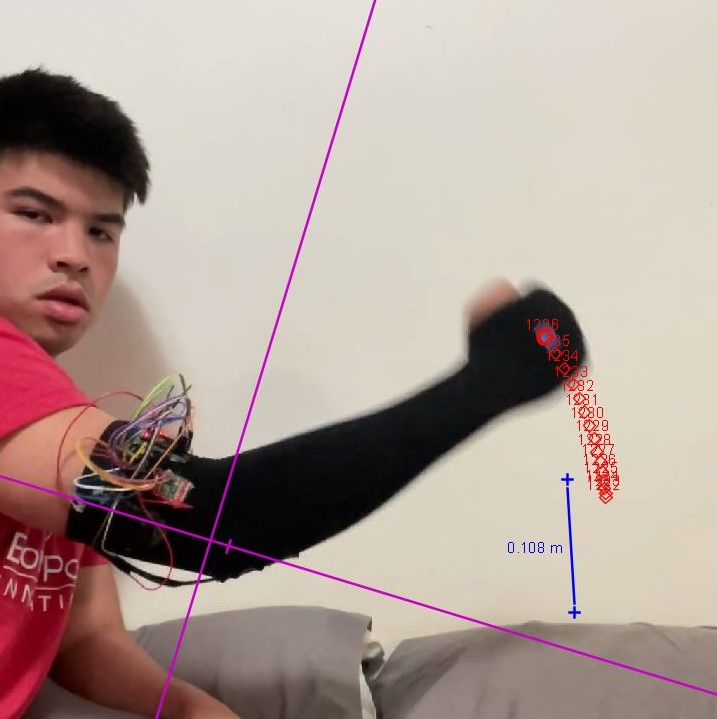
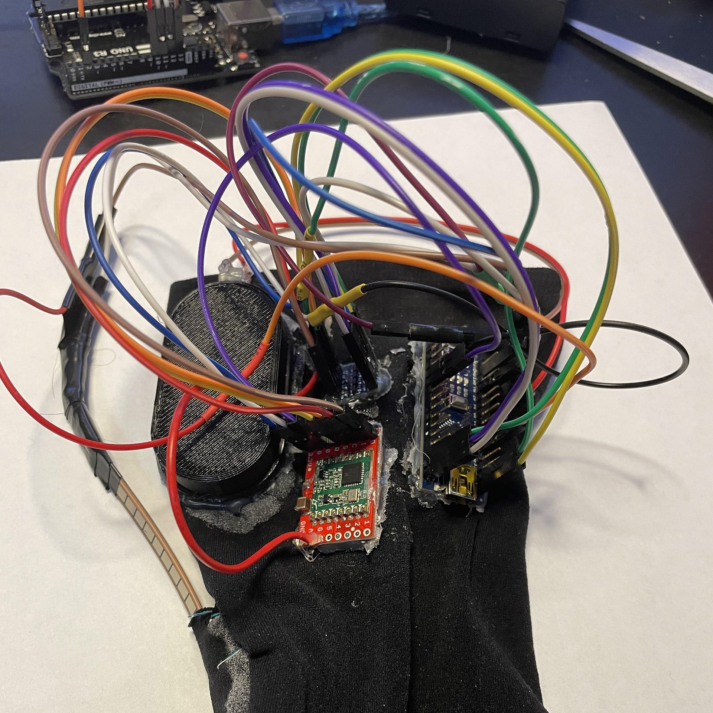
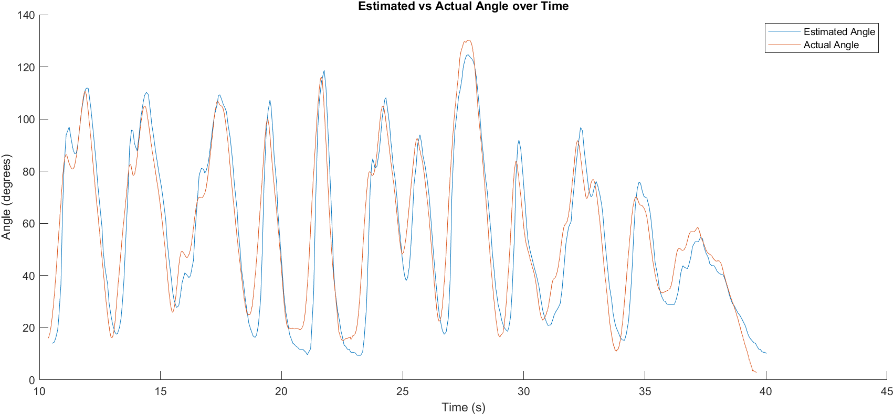
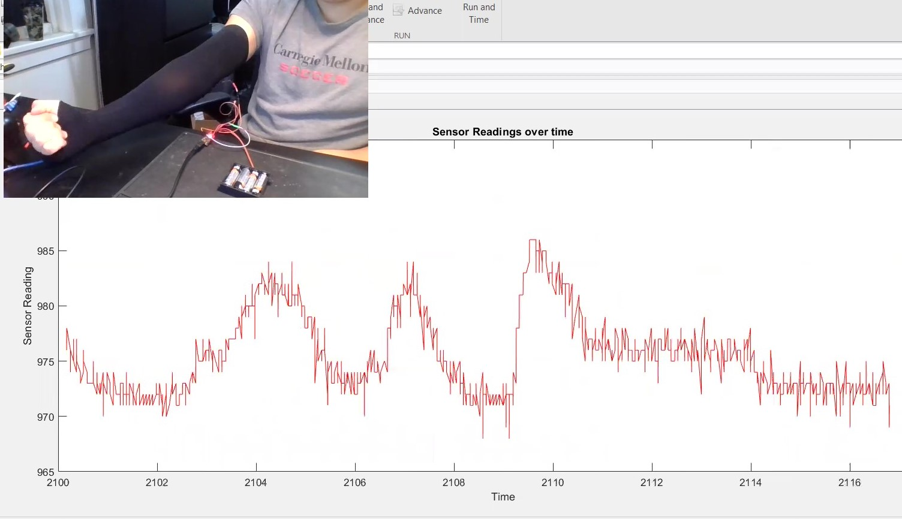

Human Motion Tracking Sleeve
Desgning and testing a sleeve for tracking joint movement
Soft Robotics, January - May 2022

About the Project:
This roller coaster simulation was coded in C++ as a project for a C++ for Engineers course.
My job was to model the kinematics of a roller coaster within code and make a user interface to
'create a useful tool to represent this model. Most of this project used object-oriented programming
by treating each element in the simulation as its own class. Below is a demonstration of all its
features and capabilities.
View the Research Paper

About the Hardware
This roller coaster simulation was coded in C++ as a project for a C++ for Engineers course.
My job was to model the kinematics of a roller coaster within code and make a user interface to
'create a useful tool to represent this model. Most of this project used object-oriented programming
by treating each element in the simulation as its own class. Below is a demonstration of all its
features and capabilities.


Testing and Validation
Below are some pictures of the subsystems of the boat. On the top right are the two motors which
operated the boat as a skid steer. These were controlled by ESCs, operated by an Arduino with
an IMU and a magnetometer to detect pose. On the bottom right was our sensor package, which
included an Arduino wired to various water data sensors like salinity, turbidity, temperature,
and pH. Lastly, on the bottom left, you can see the reel and chute system for deploying the
sensor package and some of the internal electronics, like the batteries for powering all subsystems.